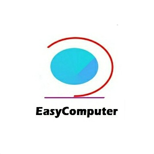

本博客计划写入一些有关电脑的文章 目前已经在筹划Windows进化史，也会发布一些电脑技术类的文章(还会有一些奇奇怪怪的东西） 网站初步建立，所以页面会有点不美观，不过近期我的重点会在网站内容上，但是UI问题也会一点一点解决的呐 受个人能力所限，目前只能托管至GitHub，将来一定会改成顶级域名 除此之外，本博客还提供一些手机&电脑好用的软件下载，单击“下载中心"以查看更多内容！
电脑爱好者呐刚刚入手前端建设，但是软件开发已经研究了一段时间了，目前也在用.NET在写一个工具集软件
虽然在生活中有点社恐，但是在网络上就相反了做过十六项测试，是ITPT-T型，也不算罕见吧
个人邮箱：t1472580369@outlook.com
Copyright EasyComputer 2022